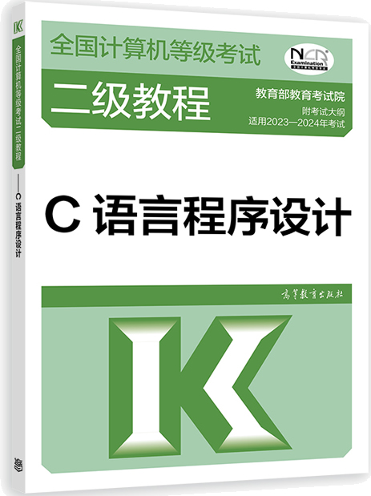

首页 > 书籍下载
《C语言程序设计》全国计算机等级考试二级教程PDF下载（高清完整版）
|  | 作者：教育部教育考试院 |
| 出版时间：2022年02月01日 | |
| 出版社：高等教育出版社 | |
| 书号ISBN：9787040576818 | |
| 总页数：292 |
这是一本专为全国计算机二级考试编写的 C 语言书籍，内容精炼，实用性强，是每位考生必备的 C 语言学习教材。
这里提供的是《C语言程序设计》全国计算机等级考试二级教程的高清 PDF 下载，内容完整，附带目录标签。
以下是一些读者对这本书的评价：
1) 考试官方推荐教材，这本书你可以用来单纯考试，也可以用来学习一些基础知识，很不错。
2) 二级考试用书，内容很全面，有具体的案例来做练习，书的质量还可以，体系完整，内容丰富，争取考试可以顺利通过。
3) 书的内容很完整，相对来说比较好理解，很符合考试大纲的要求，适合备考。
4) 二级教程，买来学习学习，内容很完整，很全面，可以作为考试的指导用书。
书籍目录
- 第1章 程序设计基本概念
- 1.1 程序和程序设计
- 1.2 算法
- 1.3 结构化程序设计和模块化结构
- 习题
- 第2章 C程序设计的初步知识
- 2.1 简单C语言程序的构成和格式
- 2.2 标识符常量和变量
- 2.3 整型数据
- 2.4 实型数据
- 2.5 算术表达式
- 2.6 赋值表达式
- 2.7 自加自减运算符和逗号运算符
- 习题
- 第3章 顺序结构
- 3.1 赋值语句
- 3.2 数据输出
- 3.3 数据输入
- 3.4 复合语句和空语句
- 3.5 程序举例
- 习题
- 第4章 选择结构
- 4.1 关系运算和逻辑运算
- 4.2 if语句和用if语句构成的选择结构
- 4.3 条件表达式构成的选择结构
- 4.4 switch语句以及用switch语句和break语句构成的选择结构
- 4.5 语句标号和goto语句
- 习题
- 第5章 循环结构
- 5.1 while语句和用while语句构成的循环结构
- 5.2 do-while语句和用do-while语句构成的循环结构
- 5.3 for语句和用for语句构成的循环结构
- 5.4 循环结构的嵌套
- 5.5 break和continue语句在循环体中的作用
- 5.6 程序举例
- 习题
- 第6章 字符型数据
- 6.1 字符型常量
- 6.2 字符变量
- 6.3 字符的输入和输出
- 6.4 程序举例
- 习题
- 第7章 函数
- 7.1 库函数
- 7.2 函数的定义和返回值
- 7.3 函数的调用
- 7.4 函数的说明
- 7.5 调用函数和被调用函数之间的数据传递
- 7.6 程序举例
- 习题
- 第8章 地址和指针
- 8.1 变量的地址和指针
- 8.2 指针变量的定义和指针变量的基类型
- 8.3 给指针变量赋值
- 8.4 对指针变量的操作
- 8.5 函数之间地址值的传递
- 习题
- 第9章 数组
- 9.1 一维数组的定义和一维数组元素的引用
- 9.2 一维数组和指针
- 9.3 函数之间对一维数组和数组元素的引用
- 9.4 一维数组应用举例
- 9.5 二维数组的定义和二维数组元素的引用
- 9.6 二维数组和指针
- 9.7 二维数组名和指针数组作为实参
- 9.8 二维数组程序举例
- 习题 第10章 字符串
- 10.1 用一维字符数组存放字符串
- 10.2 使指针指向一个字符串
- 10.3 字符串的输入和输出
- 10.4 字符串数组
- 10.5 用于字符串处理的函数
- 10.6 程序举例
- 习题 第11章 对函数的进一步讨论
- 11.1 传给main函数的参数
- 11.2 通过实参向函数传递函数名或指向函数的指针变量
- 11.3 函数的递归调用
- 习题 第12章 C语言中用户标识符的作用域和存储类
- 12.1 局部变量、全局变量和存储分类
- 12.2 局部变量及其作用域和生存期
- 12.3 全局变量及其作用域和生存期
- 12.4 函数的存储分类
- 习题 第13章 编译预处理和动态存储分配
- 13.1 编译预处理
- 13.2 动态存储分配
- 习题 第14章 结构体共用体和用户定义类型
- 14.1 用typedef说明一种新类型名
- 14.2 结构体类型
- 14.3 共用体
- 习题 第15章 位运算
- 15.1 位运算符
- 15.2 位运算符的运算功能
- 习题 第16章 文件
- 16.1 C语言文件的概念
- 16.2 文件指针
- 16.3 打开文件
- 16.4 关闭文件
- 16.5 调用getc(fgetc)和putc(fputc)函数进行输入和输出
- 16.6 判断文件结束函数feof
- 16.7 fscanf 函数和fprintf函数
- 16.8 fgets函数和fputs函数
- 16.9 fread函数和fwrite函数
- 16.10 文件定位函数
- 习题
- 附录
- 附录1 考试指导
- 附录2 C语言的关键字
- 附录3 双目算术运算中两边运算量类型转换规律
- 附录4 运算符的优先级和结合性
- 附录5 常用字符与ASCII代码对照表
- 附录6 库函数
- 附录7 全国计算机等级考试二级C语言程序设计考试大纲
- 附录8 全国计算机等级考试二级C语言程序设计样题及参考答案
- 附录9 习题参考答案
书籍下载
一键登录，免费下载完整版 PDF，文件名称：《C语言程序设计》全国计算机等级考试二级教程.pdf